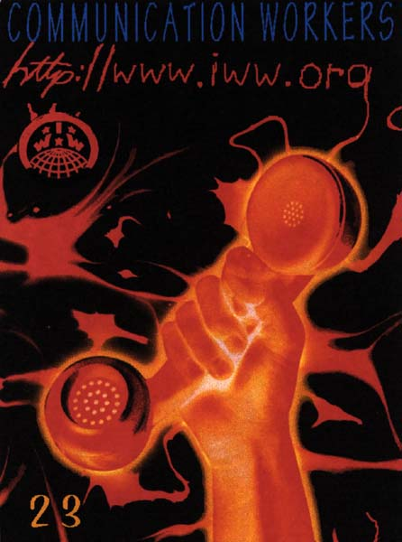

Submitted on Fri, 07/01/2005 - 7:57am
BERKELEY- Workers at the Ecology Center in Berkeley, known as Curbside, welcomed their new operations manager Friday July 1st, with a meeting to discuss their expectations of his conduct. As the new boss sat and listened, Fellow Workers Todd Miller and Dominic Moschella outlined their complaints.
Dominic handed over a maintenance sheet on every Curbside truck, filled out by the workers. “We want to see all the safety issue stuff taken care of within a week,” said Dominic.
Many of the trucks at Curbside have missing mirrors, broken turn signals, and bad rear view cameras. Many trucks are so old that they break down frequently, forcing the workers to complete their routes with fewer trucks.
“If there were an inspection, most of those trucks wouldn’t even leave the lot,” Todd told the boss.
The workers expect the safety issues to be corrected within a week, and non-safety issues to be cleared up within a reasonable time period.
The workers told the boss they wouldn’t tolerate management driving routes. “We voted unanimously,” said Todd. “Those are union jobs, and management should not be doing union work.”
Submitted on Thu, 06/30/2005 - 1:49am
Visit this site, and scroll down and click on the "Wobblies" link.
Submitted on Wed, 06/29/2005 - 1:28am
By Geoffrey Frost - Industrial Worker, June 2005.
Several Wobblies in Pittsburgh and in Appalachia are working to support Mountain Justice Summer. Mountain Justice Summer is a campaign to stop Mountaintop Removal (MTR) mining, an environmentally devastating mining practice.
Mountaintop removal is what it sounds like: coal companies blast off the tops of mountains to get at thin seams of coal that are hauled off to fire the power plants. MTR is how the power companies provide "cheap" energy to the rest of the United States. Of course, it doesn't really come cheap. Mountaintop removal is the neoliberal vision fulfilled: a handful of poorly paid, non-union workers destroying one of the most biodiverse regions on Earth to fuel power plants that spew out yet more pollution upon the usually poor working-class communities around them, all the while stoking the furnace of global warming that causes the deaths of thousands upon thousands of working people each year and is only growing worse.
This is the cheap energy that dooms our children to asthma, mercury poisoning, and perhaps no future at all. This is the "cheap" energy demanded by our government.s financiers to fuel their uninhibited accumulation of wealth at the expense of all else.
Submitted on Wed, 06/29/2005 - 1:04am
Staughton Lynd’s remarks on Solidarity Unionism
To Begin With
The greatest honor I have ever received is to be asked to speak to you on the occasion of the IWW's 100th birthday.
But I am not standing here alone. Beside me are departed friends. John Sargent was the first president of Local 1010, United Steelworkers of America, the 18,000-member local union at Inland Steel just east of Chicago. John said that he and his fellow workers achieved far more through direct action before they had a collective bargaining agreement than they did after they had a contract. You can read his words in the book Rank and File. Ed Mann and John Barbero, after years as rank and filers, became president and vice president of Local 1462, United Steelworkers of America, at Youngstown Sheet & Tube in Youngstown, and toward the end of his life Ed joined the IWW. Ed and John were ex-Marines who opposed both the Korean and Vietnam wars; they fought racism both in the mill and in the city of Youngstown, where in the 1950s swimming pools were still segregated; they believed, as do I, that there will be no answer to the problem of plant shutdowns until working people take the means of production into their own hands; and in January 1980, in response to U.S. Steel's decision to close all its Youngstown facilities, Ed led us down the hill from the local union hall to the U.S. Steel administration building, where the forces of good broke down the door and for one glorious afternoon occupied the company headquarters. Ed's daughter changed her baby's diapers on the pool table in the executive game room. Stan Weir and Marty Glaberman, very much alone, moved our thinking forward about informal work groups as the heart of working-class self-organization, about unions with leaders who stay on the shop floor, about alternatives to the hierarchical vanguard party, about overcoming racism and about international solidarity.
Submitted on Tue, 06/28/2005 - 9:19pm
The following review was posted on the http://www.communicateordie.com/ site. Our responses to the (more or less positive criticism) are in italics -- intexile.
Submitted by Steve Dondley on Tue, 06/28/2005 - 3:39pm - Categories: Critiques
The International Workers of the World (IWW), the union that refuses to die, recently retooled its website and now has a 4 speed, dual-quad, Posi-Traction Drupal engine purring under the hood. Giddyup!
That's Industrial (--not International) Workers of the World, Steve.
What's amazing is that this small, independent union, with only about 1,200 dues paying members worldwide, now has a site more technologically sophisticated and interactive than most International unions hundreds of times its size. I took a brief look around the site. Here's my initial impressions.
Pluses
Forums
This is a must have for any union site. It demonstrates to workers that the union has interest in fostering communication.
Visual calendar
Again, another item that should be a staple of any union site to keep members apprised of upcoming events at a glance. The site also uses the newest version of Drupal's event module which lets you view only events you might be interested in.
Design
It's obvious a lot of time was spent customizing the default templates that come with Drupal to give the site its own indentity. Though the rather ominous color scheme doesn't work for me, it might work for the Marxist workers the IWW tends to attract.
The IWW has always used red as its color, long before the Bolshevik Revolution in Russia in 1917 or the Anarchist Revolution in Spain in 1936. The IWW is unabashedly radical and we are 100% honest about it. We see no reason why we should not onw the color (just as people of color, or G/L/B/T people own the language used to describe them).
Store
Drupal also has an ecommerce module that allows visitors to purchase products. Great way for generating more revenue and spreading the IWW culture.
We had the store on our previous site; it's not a Drupal Eccomerce module yet; but we'll have one soon!
Pay dues online
Awesome use of technology here. It's something the IWW needs, too, as they don't have dues checkoff on the job.
We've had this for awhile. The IWW was the second union in the world to even have a website (an Isreali Teacher's Union was the first), and we were definitely the first to allow people to join through our website.
Features ways to get involved
The site offers opportunities for workers to volunteer on various committees.
Multilingual
Again, this is truly awesome. Though this feature is standard in Drupal, they have made it very convenient. One click at the top of the screen and your site is rewritten in an entirely new language!
No, not quite; we wish that were true. Right now it must be posted in the chosen language to appear in that language. We're looking for that capability, though.
Central repository for graphics
The site has a central repository of graphics that can be used by the IWW's branch offices. However, I don't think the implemenation of it is that great (see "Need more user-friendly image repository" below).
See below for our response.
Minuses
Blogs
No blogs? Why not?
We're just getting set up! The blogs will be added soon.
No Photos
Clip art on a site can only take you so far. I'd like to see some photos of IWW workers in action
We can only post the graphics that our members send us. As time goes on, we plan to encourage and use photos of workers engaged in organizing campaigns and demonstrations.
Many pages are too long
The site should use better use of Drupal's book module and chop the pages up into more digestable pieces.
The current site is built within the shell of the old (which had the longer pages). Most of the content featured here is from the older site. As time goes on these older, longer pages may be reorganized as Steve suggests.
No success stories
Where is the evidence of what IWW has done to help workers? Maybe I missed it and its buried deep down in the site. If so, that material should be made front and center.
The successes exist. They'll be featured soon. Is not the truckers campaign (which is accessible through the link in the "News, Strikes, and Alerts" story--sticky near the top) one such example?
No appeal to mainstream audience
The material on site is geared mostly to Marxists. Maybe that's their intention but I think they should at least make some attempt at explaining their position to a more mainstream audience.
The IWW is not a Marxist organization and our attempt is not specifically to appeal to "Marxists". In fact our goal is to appeal to rank & file workers. However we're unabashedly radical and anti-capitalist (that doesn't necessarily make us "Marxist" by the way). The IWW is not going to lie and claim to be something it isn't. We're nothing if not honest!
Newspaper articles aren't online
The IWW has a newspaper. At least some of the articles should be placed online.
We'll feature news articles soon. Bear with us Steve!
Must search for the search
search box is hidden behind a graphic.
It's at the top of the flippin' screen--GAWD! (with apologies to Napoleon Dynamite!)
Uses Microsoft Word document for distributing files
I'm being a hypocrite here, but a union like IWW should definitely have made a commitment to open, non-proprietary document formats.
Say What? We use Trustix Linux on our servers, Drupal for this Content Management System, and PDFs. To what MS documents are you referring (other than a few attachments that others sent us?)
Needs more user-friendly image repository
The currenly repository of images requires you to click on the link before seeing. This is tedious and time consuming. Why not use Drupal's excellent image module to display them?
Again, this is because we built this site within the shell of the old--which obviously didn't have such a feature. We'll transition to the Drupal module soon.
All-in-all Comrade Dondley's criticisms are constructive and positive. Thanks for sharing them, and we'll do what we can to make the IWW website the envy of business unions and an inspiration to rank & file workers everywhere!
We have added the "Communicate or Die" blog to our collection of RSS feeds. We hope that they will return the favor!
The original post is featured here: http://www.communicateordie.com/node/57